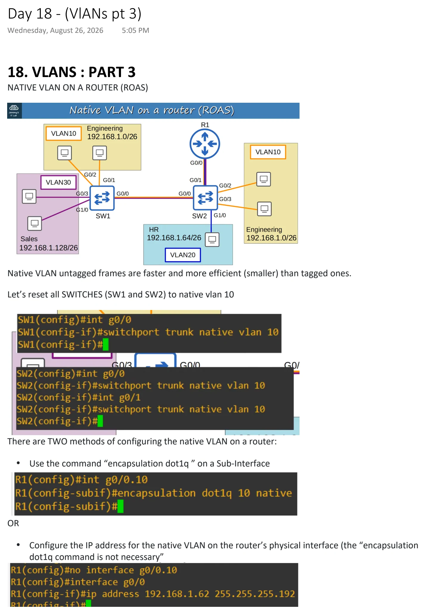
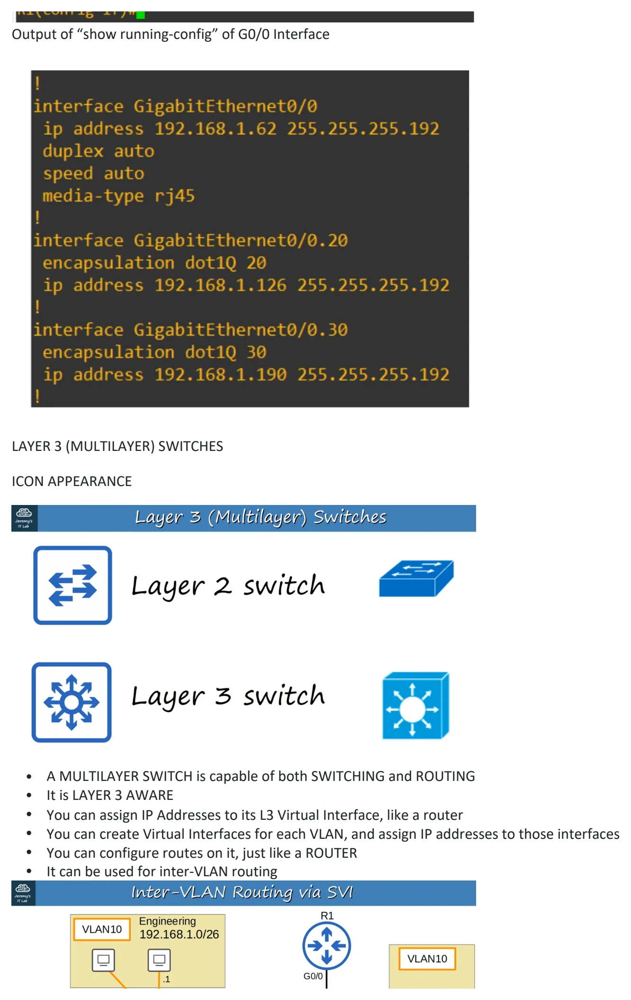
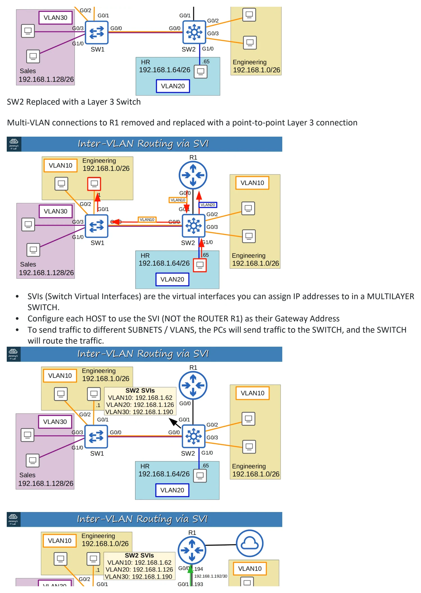
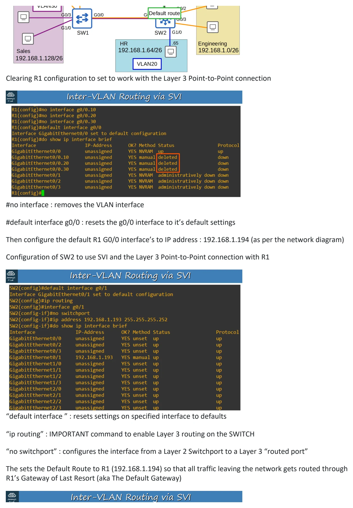
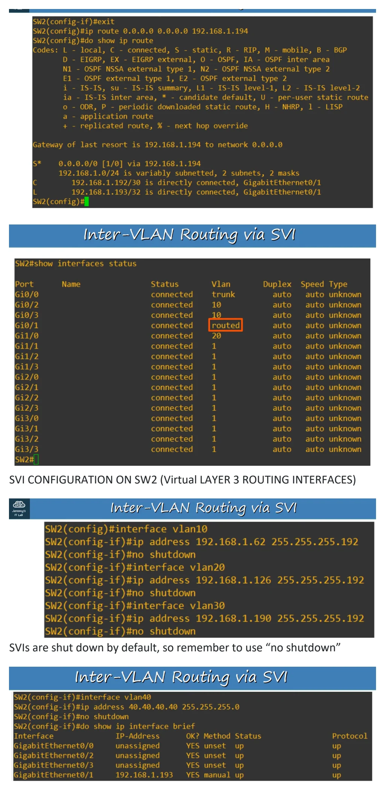
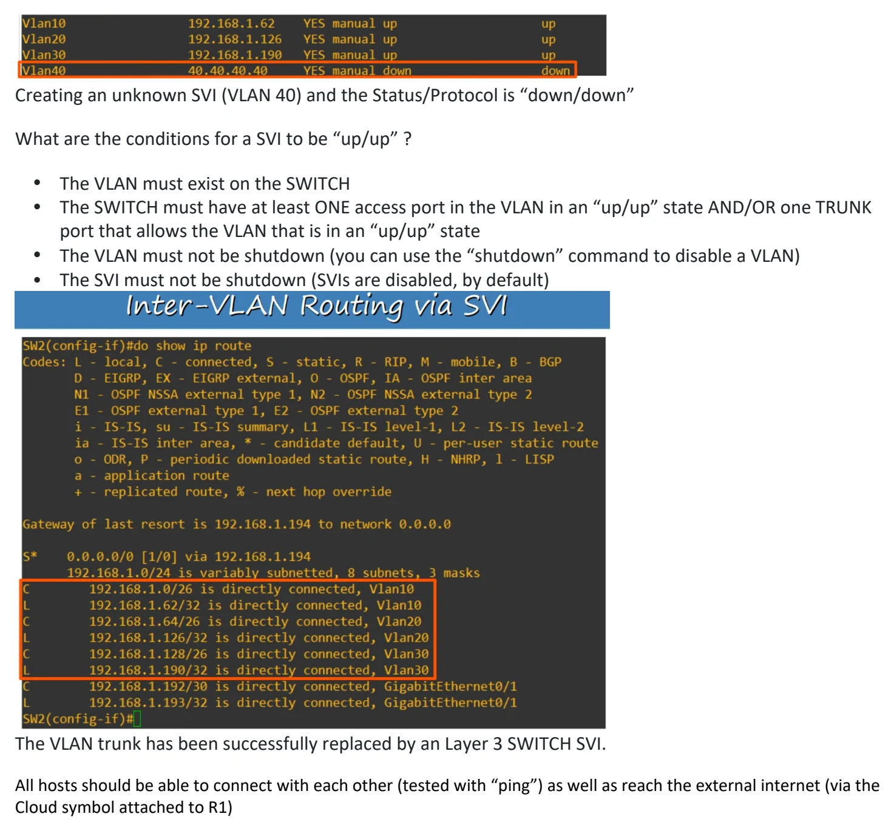

Day 18 / 63 · Switching & VLANs
(VlANs pt 3)
Study notes based primarily on Jeremy’s IT Lab CCNA learning videos. Credit to Jeremy’s IT Lab for the source lessons and diagrams.
(VlANs pt 3)
Download original PDF





Text view — (VlANs pt 3)
Extracted from the original export. Diagrams and some formatting appear in the notes above.
Day 18 - (VlANs pt 3) Wednesday, August 26, 2026 5:05 PM 18. VLANS : PART 3 NATIVE VLAN ON A ROUTER (ROAS) Native VLAN untagged frames are faster and more efficient (smaller) than tagged ones. Let’s reset all SWITCHES (SW1 and SW2) to native vlan 10 There are TWO methods of configuring the native VLAN on a router: • Use the command “encapsulation dot1q ” on a Sub-Interface OR • Configure the IP address for the native VLAN on the router’s physical interface (the “encapsulation dot1q command is not necessary” Output of “show running-config” of G0/0 Interface LAYER 3 (MULTILAYER) SWITCHES ICON APPEARANCE • A MULTILAYER SWITCH is capable of both SWITCHING and ROUTING • It is LAYER 3 AWARE • You can assign IP Addresses to its L3 Virtual Interface, like a router • You can create Virtual Interfaces for each VLAN, and assign IP addresses to those interfaces • You can configure routes on it, just like a ROUTER • It can be used for inter-VLAN routing SW2 Replaced with a Layer 3 Switch Multi-VLAN connections to R1 removed and replaced with a point-to-point Layer 3 connection • SVIs (Switch Virtual Interfaces) are the virtual interfaces you can assign IP addresses to in a MULTILAYER SWITCH. • Configure each HOST to use the SVI (NOT the ROUTER R1) as their Gateway Address • To send traffic to different SUBNETS / VLANS, the PCs will send traffic to the SWITCH, and the SWITCH will route the traffic. Clearing R1 configuration to set to work with the Layer 3 Point-to-Point connection #no interface : removes the VLAN interface #default interface g0/0 : resets the g0/0 interface to it’s default settings Then configure the default R1 G0/0 interface’s to IP address : 192.168.1.194 (as per the network diagram) Configuration of SW2 to use SVI and the Layer 3 Point-to-Point connection with R1 “default interface ” : resets settings on specified interface to defaults “ip routing” : IMPORTANT command to enable Layer 3 routing on the SWITCH “no switchport” : configures the interface from a Layer 2 Switchport to a Layer 3 “routed port” The sets the Default Route to R1 (192.168.1.194) so that all traffic leaving the network gets routed through R1’s Gateway of Last Resort (aka The Default Gateway) SVI CONFIGURATION ON SW2 (Virtual LAYER 3 ROUTING INTERFACES) SVIs are shut down by default, so remember to use “no shutdown” Creating an unknown SVI (VLAN 40) and the Status/Protocol is “down/down” What are the conditions for a SVI to be “up/up” ? • The VLAN must exist on the SWITCH • The SWITCH must have at least ONE access port in the VLAN in an “up/up” state AND/OR one TRUNK port that allows the VLAN that is in an “up/up” state • The VLAN must not be shutdown (you can use the “shutdown” command to disable a VLAN) • The SVI must not be shutdown (SVIs are disabled, by default) The VLAN trunk has been successfully replaced by an Layer 3 SWITCH SVI. All hosts should be able to connect with each other (tested with “ping”) as well as reach the external internet (via the Cloud symbol attached to R1) Day 18 - (VlANs pt 3) Wednesday, August 26, 2026 5:05 PM 18. VLANS : PART 3 NATIVE VLAN ON A ROUTER (ROAS) Native VLAN untagged frames are faster and more efficient (smaller) than tagged ones. Let’s reset all SWITCHES (SW1 and SW2) to native vlan 10 There are TWO methods of configuring the native VLAN on a router: • Use the command “encapsulation dot1q ” on a Sub-Interface OR • Configure the IP address for the native VLAN on the router’s physical interface (the “encapsulation dot1q command is not necessary” Output of “show running-config” of G0/0 Interface LAYER 3 (MULTILAYER) SWITCHES ICON APPEARANCE • A MULTILAYER SWITCH is capable of both SWITCHING and ROUTING • It is LAYER 3 AWARE • You can assign IP Addresses to its L3 Virtual Interface, like a router • You can create Virtual Interfaces for each VLAN, and assign IP addresses to those interfaces • You can configure routes on it, just like a ROUTER • It can be used for inter-VLAN routing SW2 Replaced with a Layer 3 Switch Multi-VLAN connections to R1 removed and replaced with a point-to-point Layer 3 connection • SVIs (Switch Virtual Interfaces) are the virtual interfaces you can assign IP addresses to in a MULTILAYER SWITCH. • Configure each HOST to use the SVI (NOT the ROUTER R1) as their Gateway Address • To send traffic to different SUBNETS / VLANS, the PCs will send traffic to the SWITCH, and the SWITCH will route the traffic. Clearing R1 configuration to set to work with the Layer 3 Point-to-Point connection #no interface : removes the VLAN interface #default interface g0/0 : resets the g0/0 interface to it’s default settings Then configure the default R1 G0/0 interface’s to IP address : 192.168.1.194 (as per the network diagram) Configuration of SW2 to use SVI and the Layer 3 Point-to-Point connection with R1 “default interface ” : resets settings on specified interface to defaults “ip routing” : IMPORTANT command to enable Layer 3 routing on the SWITCH “no switchport” : configures the interface from a Layer 2 Switchport to a Layer 3 “routed port” The sets the Default Route to R1 (192.168.1.194) so that all traffic leaving the network gets routed through R1’s Gateway of Last Resort (aka The Default Gateway) SVI CONFIGURATION ON SW2 (Virtual LAYER 3 ROUTING INTERFACES) SVIs are shut down by default, so remember to use “no shutdown” Creating an unknown SVI (VLAN 40) and the Status/Protocol is “down/down” What are the conditions for a SVI to be “up/up” ? • The VLAN must exist on the SWITCH • The SWITCH must have at least ONE access port in the VLAN in an “up/up” state AND/OR one TRUNK port that allows the VLAN that is in an “up/up” state • The VLAN must not be shutdown (you can use the “shutdown” command to disable a VLAN) • The SVI must not be shutdown (SVIs are disabled, by default) The VLAN trunk has been successfully replaced by an Layer 3 SWITCH SVI. All hosts should be able to connect with each other (tested with “ping”) as well as reach the external internet (via the Cloud symbol attached to R1) Day 18 - (VlANs pt 3) Wednesday, August 26, 2026 5:05 PM 18. VLANS : PART 3 NATIVE VLAN ON A ROUTER (ROAS) Native VLAN untagged frames are faster and more efficient (smaller) than tagged ones. Let’s reset all SWITCHES (SW1 and SW2) to native vlan 10 There are TWO methods of configuring the native VLAN on a router: • Use the command “encapsulation dot1q ” on a Sub-Interface OR • Configure the IP address for the native VLAN on the router’s physical interface (the “encapsulation dot1q command is not necessary” Output of “show running-config” of G0/0 Interface LAYER 3 (MULTILAYER) SWITCHES ICON APPEARANCE • A MULTILAYER SWITCH is capable of both SWITCHING and ROUTING • It is LAYER 3 AWARE • You can assign IP Addresses to its L3 Virtual Interface, like a router • You can create Virtual Interfaces for each VLAN, and assign IP addresses to those interfaces • You can configure routes on it, just like a ROUTER • It can be used for inter-VLAN routing SW2 Replaced with a Layer 3 Switch Multi-VLAN connections to R1 removed and replaced with a point-to-point Layer 3 connection • SVIs (Switch Virtual Interfaces) are the virtual interfaces you can assign IP addresses to in a MULTILAYER SWITCH. • Configure each HOST to use the SVI (NOT the ROUTER R1) as their Gateway Address • To send traffic to different SUBNETS / VLANS, the PCs will send traffic to the SWITCH, and the SWITCH will route the traffic. Clearing R1 configuration to set to work with the Layer 3 Point-to-Point connection #no interface : removes the VLAN interface #default interface g0/0 : resets the g0/0 interface to it’s default settings Then configure the default R1 G0/0 interface’s to IP address : 192.168.1.194 (as per the network diagram) Configuration of SW2 to use SVI and the Layer 3 Point-to-Point connection with R1 “default interface ” : resets settings on specified interface to defaults “ip routing” : IMPORTANT command to enable Layer 3 routing on the SWITCH “no switchport” : configures the interface from a Layer 2 Switchport to a Layer 3 “routed port” The sets the Default Route to R1 (192.168.1.194) so that all traffic leaving the network gets routed through R1’s Gateway of Last Resort (aka The Default Gateway) SVI CONFIGURATION ON SW2 (Virtual LAYER 3 ROUTING INTERFACES) SVIs are shut down by default, so remember to use “no shutdown” Creating an unknown SVI (VLAN 40) and the Status/Protocol is “down/down” What are the conditions for a SVI to be “up/up” ? • The VLAN must exist on the SWITCH • The SWITCH must have at least ONE access port in the VLAN in an “up/up” state AND/OR one TRUNK port that allows the VLAN that is in an “up/up” state • The VLAN must not be shutdown (you can use the “shutdown” command to disable a VLAN) • The SVI must not be shutdown (SVIs are disabled, by default) The VLAN trunk has been successfully replaced by an Layer 3 SWITCH SVI. All hosts should be able to connect with each other (tested with “ping”) as well as reach the external internet (via the Cloud symbol attached to R1) Day 18 - (VlANs pt 3) Wednesday, August 26, 2026 5:05 PM 18. VLANS : PART 3 NATIVE VLAN ON A ROUTER (ROAS) Native VLAN untagged frames are faster and more efficient (smaller) than tagged ones. Let’s reset all SWITCHES (SW1 and SW2) to native vlan 10 There are TWO methods of configuring the native VLAN on a router: • Use the command “encapsulation dot1q ” on a Sub-Interface OR • Configure the IP address for the native VLAN on the router’s physical interface (the “encapsulation dot1q command is not necessary” Output of “show running-config” of G0/0 Interface LAYER 3 (MULTILAYER) SWITCHES ICON APPEARANCE • A MULTILAYER SWITCH is capable of both SWITCHING and ROUTING • It is LAYER 3 AWARE • You can assign IP Addresses to its L3 Virtual Interface, like a router • You can create Virtual Interfaces for each VLAN, and assign IP addresses to those interfaces • You can configure routes on it, just like a ROUTER • It can be used for inter-VLAN routing SW2 Replaced with a Layer 3 Switch Multi-VLAN connections to R1 removed and replaced with a point-to-point Layer 3 connection • SVIs (Switch Virtual Interfaces) are the virtual interfaces you can assign IP addresses to in a MULTILAYER SWITCH. • Configure each HOST to use the SVI (NOT the ROUTER R1) as their Gateway Address • To send traffic to different SUBNETS / VLANS, the PCs will send traffic to the SWITCH, and the SWITCH will route the traffic. Clearing R1 configuration to set to work with the Layer 3 Point-to-Point connection #no interface : removes the VLAN interface #default interface g0/0 : resets the g0/0 interface to it’s default settings Then configure the default R1 G0/0 interface’s to IP address : 192.168.1.194 (as per the network diagram) Configuration of SW2 to use SVI and the Layer 3 Point-to-Point connection with R1 “default interface ” : resets settings on specified interface to defaults “ip routing” : IMPORTANT command to enable Layer 3 routing on the SWITCH “no switchport” : configures the interface from a Layer 2 Switchport to a Layer 3 “routed port” The sets the Default Route to R1 (192.168.1.194) so that all traffic leaving the network gets routed through R1’s Gateway of Last Resort (aka The Default Gateway) SVI CONFIGURATION ON SW2 (Virtual LAYER 3 ROUTING INTERFACES) SVIs are shut down by default, so remember to use “no shutdown” Creating an unknown SVI (VLAN 40) and the Status/Protocol is “down/down” What are the conditions for a SVI to be “up/up” ? • The VLAN must exist on the SWITCH • The SWITCH must have at least ONE access port in the VLAN in an “up/up” state AND/OR one TRUNK port that allows the VLAN that is in an “up/up” state • The VLAN must not be shutdown (you can use the “shutdown” command to disable a VLAN) • The SVI must not be shutdown (SVIs are disabled, by default) The VLAN trunk has been successfully replaced by an Layer 3 SWITCH SVI. All hosts should be able to connect with each other (tested with “ping”) as well as reach the external internet (via the Cloud symbol attached to R1) Day 18 - (VlANs pt 3) Wednesday, August 26, 2026 5:05 PM 18. VLANS : PART 3 NATIVE VLAN ON A ROUTER (ROAS) Native VLAN untagged frames are faster and more efficient (smaller) than tagged ones. Let’s reset all SWITCHES (SW1 and SW2) to native vlan 10 There are TWO methods of configuring the native VLAN on a router: • Use the command “encapsulation dot1q ” on a Sub-Interface OR • Configure the IP address for the native VLAN on the router’s physical interface (the “encapsulation dot1q command is not necessary” Output of “show running-config” of G0/0 Interface LAYER 3 (MULTILAYER) SWITCHES ICON APPEARANCE • A MULTILAYER SWITCH is capable of both SWITCHING and ROUTING • It is LAYER 3 AWARE • You can assign IP Addresses to its L3 Virtual Interface, like a router • You can create Virtual Interfaces for each VLAN, and assign IP addresses to those interfaces • You can configure routes on it, just like a ROUTER • It can be used for inter-VLAN routing SW2 Replaced with a Layer 3 Switch Multi-VLAN connections to R1 removed and replaced with a point-to-point Layer 3 connection • SVIs (Switch Virtual Interfaces) are the virtual interfaces you can assign IP addresses to in a MULTILAYER SWITCH. • Configure each HOST to use the SVI (NOT the ROUTER R1) as their Gateway Address • To send traffic to different SUBNETS / VLANS, the PCs will send traffic to the SWITCH, and the SWITCH will route the traffic. Clearing R1 configuration to set to work with the Layer 3 Point-to-Point connection #no interface : removes the VLAN interface #default interface g0/0 : resets the g0/0 interface to it’s default settings Then configure the default R1 G0/0 interface’s to IP address : 192.168.1.194 (as per the network diagram) Configuration of SW2 to use SVI and the Layer 3 Point-to-Point connection with R1 “default interface ” : resets settings on specified interface to defaults “ip routing” : IMPORTANT command to enable Layer 3 routing on the SWITCH “no switchport” : configures the interface from a Layer 2 Switchport to a Layer 3 “routed port” The sets the Default Route to R1 (192.168.1.194) so that all traffic leaving the network gets routed through R1’s Gateway of Last Resort (aka The Default Gateway) SVI CONFIGURATION ON SW2 (Virtual LAYER 3 ROUTING INTERFACES) SVIs are shut down by default, so remember to use “no shutdown” Creating an unknown SVI (VLAN 40) and the Status/Protocol is “down/down” What are the conditions for a SVI to be “up/up” ? • The VLAN must exist on the SWITCH • The SWITCH must have at least ONE access port in the VLAN in an “up/up” state AND/OR one TRUNK port that allows the VLAN that is in an “up/up” state • The VLAN must not be shutdown (you can use the “shutdown” command to disable a VLAN) • The SVI must not be shutdown (SVIs are disabled, by default) The VLAN trunk has been successfully replaced by an Layer 3 SWITCH SVI. All hosts should be able to connect with each other (tested with “ping”) as well as reach the external internet (via the Cloud symbol attached to R1) Day 18 - (VlANs pt 3) Wednesday, August 26, 2026 5:05 PM 18. VLANS : PART 3 NATIVE VLAN ON A ROUTER (ROAS) Native VLAN untagged frames are faster and more efficient (smaller) than tagged ones. Let’s reset all SWITCHES (SW1 and SW2) to native vlan 10 There are TWO methods of configuring the native VLAN on a router: • Use the command “encapsulation dot1q ” on a Sub-Interface OR • Configure the IP address for the native VLAN on the router’s physical interface (the “encapsulation dot1q command is not necessary” Output of “show running-config” of G0/0 Interface LAYER 3 (MULTILAYER) SWITCHES ICON APPEARANCE • A MULTILAYER SWITCH is capable of both SWITCHING and ROUTING • It is LAYER 3 AWARE • You can assign IP Addresses to its L3 Virtual Interface, like a router • You can create Virtual Interfaces for each VLAN, and assign IP addresses to those interfaces • You can configure routes on it, just like a ROUTER • It can be used for inter-VLAN routing SW2 Replaced with a Layer 3 Switch Multi-VLAN connections to R1 removed and replaced with a point-to-point Layer 3 connection • SVIs (Switch Virtual Interfaces) are the virtual interfaces you can assign IP addresses to in a MULTILAYER SWITCH. • Configure each HOST to use the SVI (NOT the ROUTER R1) as their Gateway Address • To send traffic to different SUBNETS / VLANS, the PCs will send traffic to the SWITCH, and the SWITCH will route the traffic. Clearing R1 configuration to set to work with the Layer 3 Point-to-Point connection #no interface : removes the VLAN interface #default interface g0/0 : resets the g0/0 interface to it’s default settings Then configure the default R1 G0/0 interface’s to IP address : 192.168.1.194 (as per the network diagram) Configuration of SW2 to use SVI and the Layer 3 Point-to-Point connection with R1 “default interface ” : resets settings on specified interface to defaults “ip routing” : IMPORTANT command to enable Layer 3 routing on the SWITCH “no switchport” : configures the interface from a Layer 2 Switchport to a Layer 3 “routed port” The sets the Default Route to R1 (192.168.1.194) so that all traffic leaving the network gets routed through R1’s Gateway of Last Resort (aka The Default Gateway) SVI CONFIGURATION ON SW2 (Virtual LAYER 3 ROUTING INTERFACES) SVIs are shut down by default, so remember to use “no shutdown” Creating an unknown SVI (VLAN 40) and the Status/Protocol is “down/down” What are the conditions for a SVI to be “up/up” ? • The VLAN must exist on the SWITCH • The SWITCH must have at least ONE access port in the VLAN in an “up/up” state AND/OR one TRUNK port that allows the VLAN that is in an “up/up” state • The VLAN must not be shutdown (you can use the “shutdown” command to disable a VLAN) • The SVI must not be shutdown (SVIs are disabled, by default) The VLAN trunk has been successfully replaced by an Layer 3 SWITCH SVI. All hosts should be able to connect with each other (tested with “ping”) as well as reach the external internet (via the Cloud symbol attached to R1)